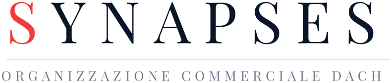

×CoFilIn queste pagine trova come Synapses costruisce per i produttori italiani come CoFil l'organizzazione commerciale in Germania, Austria e Svizzera, con una regia che la tiene sui numeri.
Nella nostra esperienza su oltre cinquanta aziende manifatturiere, il 70% di chi prova a espandersi nel DACH ottiene risultati inferiori alle proprie aspettative. Quasi sempre per tre motivi che si ripetono.
Raramente il problema è il prodotto. Quasi sempre manca l'organizzazione intorno a chi vende.
È la regia che tiene il presidio sui numeri, settimana dopo settimana, in Germania, Austria e Svizzera.
Scelga un orario nel calendario, oppure risponda al messaggio che ha ricevuto su LinkedIn.
www.synapses.it